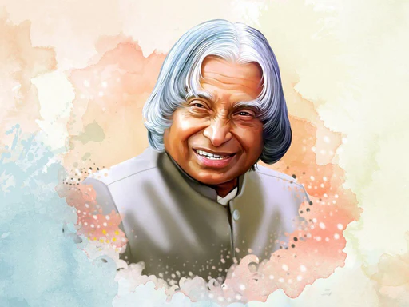
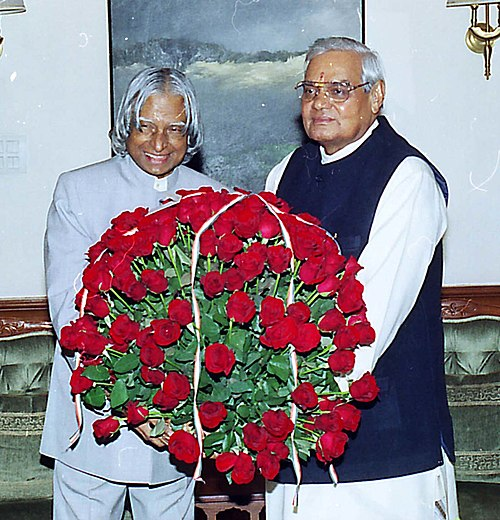
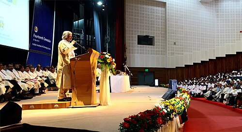
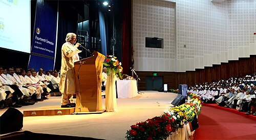

Abdul Kalam

Dr.Apj Abdul Kalam
Avul Pakir Jainulabdeen Abdul Kalam (/ˈʌbdʊl kəˈlɑːm/ ⓘ UB-duul kə-LAHM; 15 October 1931 – 27 July 2015) was an Indian aerospace scientist and statesman who served as the president of India from 2002 to 2007.
Missile Man Of India 🚀
Born and raised in a Muslim family in Rameswaram, Tamil Nadu, Kalam studied physics and aerospace engineering. He spent the next four decades as a scientist and science administrator, mainly at the Defence Research and Development Organisation (DRDO) and Indian Space Research Organisation (ISRO) and was intimately involved in India's civilian space programme and military missile development efforts. He was known as the "Missile Man of India" for his work on the development of ballistic missile and launch vehicle technology. He also played a pivotal organisational, technical, and political role in Pokhran-II nuclear tests in 1998, India's second such test after the first test in 1974. Kalam was elected as the president of India in 2002 with the support of both the ruling Bharatiya Janata Party and the then-opposition Indian National Congress. He was widely referred to as the "People's President". He engaged in teaching, writing and public service after his presidency. He was a recipient of several awards, including the Bharat Ratna, India's highest civilian honour.
Important Events 📅
 

On 18 June, Kalam filed his nomination papers in the Indian Parliament, accompanied by then prime minister Atal Bihari Vajpayee and senior cabinet members.[47] He faced off against Lakshmi Sahgal, and the polling for the presidential election was held on 15 July 2002, in the Indian parliament and the state assemblies, with the media predicting a win for Kalam.[48] The counting was held on 18 July, and Kalam won the elections after securing 922,884 electoral votes as against the 107,366 votes won by Sahgal.[49] He was sworn in as the 11th president of India on 25 July 2002.[50][51] He was the first scientist and the first bachelor to occupy the top chair at Rashtrapati Bhawan.[52]
Know About Us
We are currently practicing html by building a tribute page . Lets practice Html Together